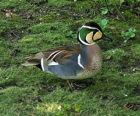

| Baikal Teal | |
|---|---|
|  | |
| An adult Baikal Teal drake. | |
| Conservation status | |
| Binomial name | |
| Anas formosa Georgi, 1775 |
]Baikal teal
The Baikal Teal (Anas formosa), also called the Bimaculate Duck or Squawk Duck, is a dabbling duck that breeds within the forest zone of eastern Siberia from the Yenisey basin eastwards to Kamchatka, northern Koryak, eastern Magadan Oblast, northern Khabarovsk Krai, southeastern and northern Sakha east central Irkutsk Oblast, and northern Krasnoyarsk Krai. It is a migratory species, wintering in South Korea, Japan, Taiwan, northern and eastern China, from Beijing down the coast to the Vietnam border, and west to Yunnan then north to Chongqing and Henan.[1][2] Molecular[3] and behavioral[4] data suggest that it has no close relatives among living ducks and should be placed in a distinct genus; it is possibly closest to such species as the Garganey and the Northern Shoveler.
At between 39 and 43 centimetres (15 and 17 in), this duck is slightly larger and longer-tailed than the Common Teal. The breeding male is unmistakable, with a striking green nape, yellow and black auriculars, neck, throat. It has a dark crown, and its breast is light brown with dark spots. It has long dropping dark scapulars, and its grey sides are set off on the front and rear with white bars.
The female looks similar to a female Green-winged Teal but with a longer tail, and a distinctive white spot at the base of the bill and a white throat that angles to the back of the eye. She also has a distinct light eyebrow bordered by a darker crown. The underwing is similar to the Green-winged Teal also, but has a darker leading edge. The green speculum has an indistinct cinnamon-buff inner border.[5] Some "females" have "bridle" markings on their faces, but it has been suggested that at least some of these bridled "females," if not all, are in fact juvenile males.[5] The juvenile has a plumage similar to that of the female and can be distinguished from the Common Teal by the pale loral spot.
In non-breeding (eclipse) plumage, the drake looks more like the female, but plumage is a much richer reddish-brown (rufous) colour.
It breeds in pools on the tundra edge and within swampy forests. In winter it is found on lowland fresh waters.
This species is classified as Vulnerable due to hunting and destruction of its wintering wetland habitats.[1] However, recent books state that the species is making a good comeback.[5]
There are approximately 300,000 Baikal teal in the world.[6]
{kind=link}